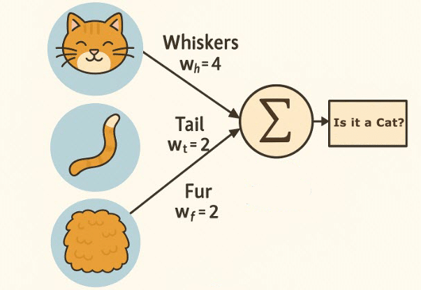

AI: Where does it fit in?
So, you’ve probably heard the term AI tossed around quite a bit lately. Maybe you’ve read headlines about it writing stories, generating art, or even coding entire apps (and yes, this blog post was not written by one… promise!). But what is AI really—and where does it fit into everything we’ve been learning so far?
AI, or Artificial Intelligence, is exactly what it sounds like: giving computers the ability to perform tasks that normally require human intelligence. That could mean understanding language, recognizing images, playing games, or even making predictions about the future.
But before we dive into how it works, let’s clear something up: AI isn’t a robot with emotions (at least not yet). It’s more like a collection of tools and systems that help computers process information, learn from it, and make decisions. You can think of it as a combination of math, logic, and statistics all working together to simulate “thinking.”
A Quick History Lesson
The idea of AI actually dates back to the 1950s! Scientists like Alan Turing (yes, that Turing) wondered if machines could “think.” This question led to what we now call the Turing Test, a famous experiment that asks: can a computer respond so naturally that a human can’t tell it apart from another person?
Over time, researchers developed algorithms—essentially step-by-step procedures—to help computers learn patterns and make predictions. For example, in the early days, people tried to teach computers how to play chess or solve logical puzzles. Now, AI systems can do things like generate realistic images, recommend your next Netflix show, and even help doctors detect diseases earlier.
The Three Main Types of AI
AI can be grouped into three broad categories depending on how “smart” it is:
- Narrow AI: The kind we use every day. Think Siri, Google Translate, or Netflix recommendations. These systems are very good at one specific task—but that’s all they can do.
- General AI: This would be an AI that can perform any intellectual task a human can. We’re not there yet (and might not be for a long time).
- Superintelligent AI: The theoretical kind that surpasses human intelligence entirely. This one exists only in science fiction… for now.
So… how does AI actually work?
At the heart of most modern AI is a concept called machine learning. Instead of programming every single rule by hand, developers give the computer data—and the computer figures out the patterns on its own.
Imagine you wanted to teach a computer to recognize pictures of cats. You could show it thousands of images labeled “cat” and “not cat.” Over time, it would start learning the common patterns that make up a cat: fur texture, ear shape, whiskers, and so on. This is called training a model.
Once trained, the model can make predictions—like whether a new image contains a cat or not. It’s a little like how humans learn: through repetition, experience, and feedback!
Different Kinds of Learning
- Supervised learning: You give the AI examples and the correct answers (like the cat example). The AI “learns” from the labeled data.
- Unsupervised learning: You only give it data—no answers—and it tries to find patterns on its own (like grouping customers by buying habits).
- Reinforcement learning: The AI learns by trial and error, getting “rewards” for good results—kind of like how you train a pet!
Where Does AI Fit in Computer Science?
AI is one branch of computer science, just like web development, cybersecurity, or data science. But what makes AI special is how it connects to so many other areas at once. It’s used in healthcare, finance, education, art, entertainment—you name it!
Remember when we talked about algorithms and efficiency in our first post? AI builds on those same principles. It still relies on data structures, math, and logic—all core computer science concepts. So, before diving deep into AI, it helps to have a solid foundation in programming, statistics, and problem-solving.
The Famous "Hello, World!" (AI Edition)
When people first learn programming, the classic first step is to print "Hello, World!" on the screen. It’s a way of saying, “I got my code to run!”—like a programmer’s first victory dance. 🥳
But what would “Hello, World!” look like in AI? It might be something simple like teaching a computer to
recognize the difference between two objects, or to respond with a short phrase when you greet it.
Instead of print("Hello, World!"), your program might “learn” that the correct output for a
greeting input is “Hello, human!”
It’s the same spirit—celebrating your first working interaction—but now, your code is thinking just a little bit.
AI in Our Everyday Lives
Even if you don’t realize it, AI is already all around you. When you ask your phone for directions, when Netflix recommends a movie, or when your email filters out spam—AI is working behind the scenes. It’s like an invisible helper that quietly makes your life easier (and sometimes a little creepier, depending on how many targeted ads you get).
But AI isn’t just about convenience. It’s helping detect wildfires earlier, translate languages in real time, and even assist people with disabilities through speech recognition and accessibility tools. That’s where its potential really shines—using technology to make the world a little more inclusive and efficient.
So… should you learn AI?
If you’re curious about how computers “think” or how apps like ChatGPT or image generators work, then yes—absolutely! AI can seem intimidating at first (it’s a lot of math, data, and algorithms), but the beauty of computer science is that everything builds on what you already know. Start small: understand logic, learn Python, and get comfortable with how data moves through a program. The rest will start to make sense from there.
AI isn’t replacing computer science—it’s expanding it. And by learning it, you’re joining one of the most exciting areas of discovery in technology today.
In short: AI fits in everywhere—but it also fits right alongside your journey as a computer scientist. Who knows? Maybe your “Hello, World!” moment is just the start of something intelligent.